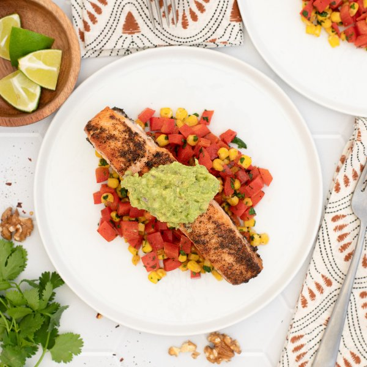

Mexican Spiced Salmon with Walnut Guacamole & Bell Pepper-Corn Sauté

Nutrition (per serving)
650.3 kcalCalories
44 gProtein
36 gCarbs
39.3 gFat
Full nutrition table
| Calories | 650.3 kcal |
| Total fat | 39.3 g |
| Saturated fat | 6.1 g |
| Trans fat | 0 g |
| Cholesterol | 76.5 mg |
| Sodium | 105.1 mg |
| Carbohydrates | 36 g |
| Fiber | 12.6 g |
| Sugars | 8.7 g |
| Protein | 44 g |
| Potassium | 1790.2 mg |
| Calcium | 118.6 mg |
| Iron | 3.5 mg |
| Vitamin A | 529.8 IU |
| Vitamin C | 181.2 mg |
| Vitamin D | 614.1 IU |
Cookware
Ingredients
- 2avocados
- 1 small bunchcilantro
- 2 cupsfrozen corn
- 2 clovesgarlic
- 2limes
- 4red bell peppers
- 1 ½ lbsalmon fillet
- 1shallot
- ¼ cupwalnuts
- black pepper
- chili powder
- cumin, ground
- extra virgin olive oil
- oregano, dried
- salt
Steps
- Preheat oven to broil on high and position rack under the broiler.
- Wash and dry the fresh produce.4 red bell peppers
1 small bunch cilantro
2 limes
2 avocados - Trim, seed, and small dice bell peppers; place in a medium bowl.
- Shave cilantro leaves off the stems; discard stems and mince the leaves. Add to the bowl with the bell pepper and set aside.
- Pat fish dry with paper towels and transfer to a baking sheet pan. Drizzle both sides with oil, arrange skin-side down, then season top side with spices.1 ½ lb salmon fillet
4 tsp extra virgin olive oil
1 tsp chili powder
1 tsp oregano, dried
1 tsp salt
½ tsp black pepper
½ tsp cumin, ground - Place baking sheet in the oven and broil until salmon is just opaque, about 5 minutes. Flip salmon and continue to broil until the skin is crispy, 3-4 minutes more. Remove from oven.
- Meanwhile, preheat a large skillet over medium heat.
- Once the skillet is hot, add oil and swirl to coat the bottom. Add bell pepper, cilantro, corn, salt, and pepper; cook, stirring occasionally, until veggies are tender, about 5 minutes. Remove from heat. (Reserve bowl for the next step.)4 tsp extra virgin olive oil
2 cups frozen corn
1 tsp salt
¼ tsp black pepper - While the veggies are cooking, peel and mince shallot and garlic. Place both in the reserved bowl.1 shallot
2 cloves garlic - Juice one lime into the bowl with the shallot and garlic. (Cut remaining lime into wedges and set aside for serving.)
- Halve and pit avocados; using a spoon, scoop the flesh into the bowl. Add spices and mash with a fork or potato masher until guacamole is smooth.¼ tsp salt
¼ tsp black pepper
¼ tsp chili powder - Roughly chop walnuts, add to the bowl with the guacamole, and stir to combine.¼ cup walnuts
- Divide salmon and veggies between plates; top salmon with guacamole and serve with lime wedges for squeezing. Enjoy!